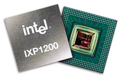
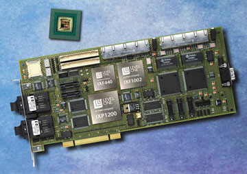

Александр Семенов
Во время московского IDF главный исполнительный директор корпорации Intel Крейг Барретт объявил о планах создания трех коммуникационных лабораторий, одна из которых будет открыта при Санкт-Петербургском университете телекоммуникаций им проф. М. А. Бонч-Бруевича (кафедра СК и РИ). Создаваемые лаборатории должны стать образовательными центрами, цель которых - обучение студентов и подготовка специалистов в области архитектуры Intel Internet Exchange Architecture (IXA). Попробуем разобраться подробнее, что представляет собой архитектура IXA и созданные в ее рамках процессоры.
IXA, IXP, IXC, IXS, IXF - что это такое?
IXA (Internet Exchange Architecture) - это архитектура создания аппаратного и программного обеспечения для рынка телекоммуникаций. Процессоры серии IXP12хх - это семейство сетевых процессоров, производимых компанией Intel в рамках IXA.
Процессоры IXP могут применяться в широком диапазоне оборудования для решения задач коммутации/маршрутизации больших потоков трафика, конвертирования протоколов, реализации технологий обеспечения QoS, фильтрации трафика, реализации межсетевых экранов и VPN, управления нагрузкой и некоторых других. Системы на базе процессоров IXP, к примеру, могут в реальном времени решать такие задачи, как конвертирование трафика ATM в Ethernet и обратно.
Одна из основных идей данной архитектуры - применение перепрограммируемых процессоров для решения задач, ранее возлагавшихся на центральные процессоры вычислительных машин или на специализированные микросхемы, спроектированные под конкретные задачи. Эта задача стала сегодня крайне актуальной, поскольку процессор современного компьютера сильно перегружен самыми разными функциями. В целом IXA представляет собой интегрированный набор структурных элементов (программного и аппаратного обеспечения, включая сетевые процессоры), используя которые, OEM-производители и независимые поставщики ПО могут создавать устройства для оказания сложных услуг. Корпорация Intel в самых разных сферах своей деятельности стремится дать пользователям набор готовых модулей, своеобразных блоков, или "кирпичиков", из которых можно просто и формировать необходимые устройства.
Использование перепрограммируемых совместимых сетевых процессоров Intel (и других элементов) позволит производителям телекоммуникационного оборудования высвободить финансовые и временные ресурсы, которые потребовались бы для создания отдельных полупроводниковых компонентов (специализированных интегральных схем, или ASIC) для каждой сферы их применения.
Архитектура IXA делает возможным применение одинаковых инструментов (операционных систем, наборов протоколов, инструментария, компиляторов и т. д.) для программирования разных процессоров. Разработчики архитектуры предполагают, что такой подход обеспечит преимущества и независимым поставщикам ПО, и OEM-производителям.
Кроме процессоров семейства IXP, в рамках IXA разработаны и другие элементы. Это IXC - процессоры уровня управления (могут применяться для управления сигнализацией и соединениями, таблицам маршрутизации); IXS - процессоры обработки медиа-потоков (служат, например, для переноса речевого трафика из коммутируемой сети в сеть с КП); IXF - элементы для создания контроллеров доступа к канальному уровню.
Каждый тип процессоров представлен определенным семейством, включающим несколько модификаций процессора. Семейство IXP представлено несколькими моделями, основное отличие которых - в производительности, а следовательно, в пригодности для создания различного телекоммуникационного оборудования. Процессоры 12хх относятся к средней или даже простейшей линейке сетевых процессоров Intel.
Необходимо упомянуть о совместимости существующих и планируемых процессоров. Несмотря на то что процессоры IXP12хх были разработаны одними из первых, они будут совместимы с последующими версиями.
В рамках архитектуры IXA Intel не только создает процессоры и сопутствующие элементы, но и предоставляет разработчикам необходимое ПО для реализации конкретных проектов (SDK). На рынке существует целый набор операционных систем и сред разработки, позволяющий максимально задействовать потенциальные возможности оборудования.
Для ускорения процесса разработки оборудования на IXP12хх Intel предлагает аппаратно-программный комплекс IXDP1200 Advanced Development Platform. Аппаратная его часть состоит из платы сетевого процессора IXP1200 с портами Ethernet и последовательным портом и шасси со слотами CompactPCI; дополнительно могут быть установлены платы ввода-вывода с WAN- или LAN-интерфейсами.
|  | Процессор IXP1200.
|
В набор программного обеспечения входит Intel IXA SDK, содержащий необходимые средства для создания программ под IXP, включая Microengine C Compiler - средство, существенно облегчающее работы по программированию IXP. Кроме того, предлагаются необходимые библиотеки и примеры создания приложений под IXDP.
Средой выполнения программ для IXP1200 служат встраиваемые (embedded) операционные системы реального времени - такие, как VxWorks или embedded Linux.
Операционная система реального времени VxWorks фирмы Wind River Systems (http://www.windriver.com) предназначена для применения на встроенных компьютерах, работающих в системах "жесткого" реального времени. ОС VxWorks - это система с кросс-средствами разработки прикладного ПО, т. е. разработка ведется на инструментальном компьютере (host) для последующего исполнения на целевой машине (target).
Пакет для разработки ПО на инструментальном ПК называется Tornado и может работать под управлением Microsoft Windows. VxWorks компании Wind River представляет собой стандарт де-факто встраиваемой ОС для оборудования сетевой инфраструктуры. Значительная часть используемого в Интернете сетевого оборудования - коммутаторы, маршрутизаторы, серверы удаленного доступа и устройства широкополосного доступа - работают под управлением VxWorks.
Основные этапы развития архитектуры
Осенью 2000 г. корпорация Intel выпустила специализированные сетевые процессоры Intel IXP220 и IXP225, призванные сократить сроки разработки оборудования для инфраструктуры Интернета, поддерживающего совместную передачу речи и данных в рамках быстро набирающей популярность технологии цифровых абонентских линий (DSL).
Сетевой процессор Intel IXP225 DSL Network Processor был первым открытым аппаратным и программным решением для совместной передачи голоса и данных в интегрированных устройствах доступа и шлюзах DSL. А IXP220 DSL Network Processor обладает всеми средствами повышения производительности и программными средствами, которые имеет модель Intel IXP225, и при этом ориентирован на оборудование, предназначенное только для передачи данных, например, мосты или маршрутизаторы. Кроме того, Intel представила эталонные платформы на базе новых DSL-процессоров, позволяющие разработчикам значительно ускорить процесс проектирования нового оборудования. А благодаря открытости программной платформы Intel IXA разработчики могут действовать на знакомой территории, не тратя силы на освоение фирменных технологий, и это также ускоряет процесс проектирования.
Эталонные платформы Intel IXP225 предоставляют проверенный базис для проектирования решений в области передачи речи и данных на основе асимметричной технологии DSL (ADSL), получившей широкое распространение в домашних и малых офисах, и новой высокоскоростной симметричной технологии SHDSL. Все компоненты платформы Intel IXA проверены на оптимальное совместное функционирование. В число этих компонентов входят флэш-память и физические интерфейсы для SHDSL и 10/100 Мбит/с локальной сети.
Сетевые процессоры Intel IXP220 и IXP225 дополняют возможности сетевого процессора Intel IXP1200, используемого в самых разных решениях для инфраструктуры Интернета. Вместе эти процессоры образуют законченный комплекс сетевых процессоров для широкого спектра оборудования.
|  | Подсистема на базе процессоров IXP1200.
|
Высокоинтегрированная архитектура сетевых процессоров Intel IXP220 и IXP225 базируется на трех функциональных процессорных блоках. Распределение нагрузки между ними обеспечивает существенный выигрыш в производительности. В результате сетевые процессоры способны обрабатывать данные на предельной для каналов локальных и глобальных сетей скорости и при этом обладают достаточным запасом производительности для реализации дополнительных приложений, предусмотренных разработчиками, например, расширенных возможностей управления или современных услуг виртуальных частных сетей. Кроме того, процессор IXP225 позволяет непосредственно подключаться к цифровым каналам передачи речи, что обеспечивает высокое качество соединения.
Центральный элемент новых процессоров - это полный комплекс открытых программных приложений, предназначенных для оптимизации работы процессоров с линиями DSL. В состав комплекса входят тщательно разработанные интерфейсы прикладного программирования (API), позволяющие разработчикам реализовать новые функции, выделяющие их решения среди конкурирующих продуктов. Помимо приложений для интеграции данных и речи, комплекс содержит целый ряд программных модулей, в том числе для маршрутизации, осуществления функций моста, управления сетью, поддержки качества обслуживания, создания виртуальных частных сетей и защиты информации.
Весной 2002 г. корпорация Intel представила семейство сетевых процессоров, созданных на основе технологии Intel XScale. Они рассчитаны на использование в самых различных средах: от дома и офиса до коммутационных центров компаний - поставщиков услуг. Intel также представила интегрированный процессор ввода-вывода, работающий более чем в два раза быстрее самых производительных аналогов, предложенных ранее Intel.
В состав нового семейства вошли сетевой процессор Intel IXP2800 для основных сетевых приложений (например, для использования в сверхскоростных коммутаторах/маршрутизаторах); сетевой процессор Intel IXP2400 для многофункциональных коммутаторов и подобного оборудования, устанавливаемого в опорных точках сети; и сетевой процессор Intel IXP425 для оборудования, с помощью которого в домах и офисах осуществляется подключение по цифровым абонентским линиям (DSL), через кабельные модемы к Интернету, а также к беспроводным локальным сетям.
Полностью программируемые сетевые процессоры IXP2800 и IXP2400 работают на скоростях 10 Гбит/с (OC-192) и 2,5 Гбит/с (OC-48) соответственно. В этих изделиях реализована технология под названием Hyper Task Chaining, позволяющая этим процессорам одновременно выполнять множество операций, что обеспечивает максимальную производительность сети и достаточную пропускную способность для одновременной работы с большим количеством комплексных служб.
Сетевой процессор IXP425 значительно упрощает проектирование компьютерных систем: в нем реализована поддержка голосовых и видеоприложений, а также приложений для работы с данными в широком спектре транспортных сред, включая стандартные версии DSL, кабельные подключения к Интернету, HDLC, беспроводные соединения стандарта IEEE 802.11x и сети стандарта Ethernet.
Процессор ввода-вывода Intel IOP321, работающий на частоте 400 или 600 МГц, оптимизирован в расчете на высокопроизводительные, экономически эффективные устройства хранения данных. Пониженное энергопотребление избавляет от необходимости устанавливать теплоотводящий радиатор, а конструкция на базе одной микросхемы позволит проектировщикам сэкономить место на системных платах.
Процессор ввода-вывода Intel IOP321 поддерживает шину PCI-X, благодаря которой серверы и устройства хранения могут передавать данные внутри системы на более высоких скоростях. Кроме того, PCI-X помогает компенсировать негативное влияние узких мест сети, использование этой шины дает общее улучшение показателей работы системы ввода-вывода в высокопроизводительных системах.
Осенью 2002 г. компания Intel представила новый сетевой процессор Intel 2850, основанный на программируемой архитектуре семейства сетевых процессоров Intel 2800. Процессор Intel IXP2850 можно запрограммировать для реализации таких услуг обработки информации, как, например, распределение нагрузки между несколькими Web-серверами. Кроме того, встроенные в процессор аппаратные механизмы обеспечивают совместимость со стандартами шифрования и поддержки целостности данных 3DES, AES и SHA-1 при скоростях передачи данных до 10 Гбит/с.
Архитектура семейства процессоров Intel IXP2800 позволяет организовать обмен данными и информацией о состоянии между этими приложениями, предъявляя минимальные требования к памяти, питанию и пространству на плате. До сих пор для реализации таких возможностей требовалось несколько отдельных специализированных процессоров.
Помимо этого компания представила дополнения к своему инструментарию для разработки аппаратных средств и ПО, а также новые услуги профессионального проектирования. Процессор Intel IXP2850 совместим с существующей платформой разработки аппаратных средств IXDP2800. В существующие программы моделирования, библиотеки и компиляторы комплекта Intel Internet Exchange Architecture (IXA) Software Development Kit 3.0 внесены обновления для поддержки новых функций безопасности и снижения затрат на обучение и поддержку.
Корпорация Intel расширила и спектр продукции для обработки данных в коммуникационных сетях, представив той же осенью управляющий процессор Intel IXC1100 - первый процессор Intel для управляющих блоков, основанный на технологии Intel XScale.
Intel IXC1100 спроектирован для эффективной и экономичной реализации функций управления и администрирования - например, в линейных адаптерах, которые служат узлами ввода и передачи больших объемов трафика в рамках сетевой платформы. Интегрированная конструкция управляющего процессора Intel IXC1100 включает ядро Intel XScale с тактовой частотой 533 МГц, обеспечивающее высокую производительность при малых габаритах процессора, экономящих драгоценное место на плате. Сочетание управляющего процессора IXC1100 и сетевых процессоров Intel на плате линейного адаптера представляет собой законченное решение для обработки управляющей информации и трафика. Управляющие и сетевые процессоры Intel построены на основе процессорного ядра Intel XScale, совместимого с набором команд ARM* V5TE. Это позволяет создавать программные и аппаратные решения с высокой степенью универсальности, используя единый набор инструментальных средств. Управляющий процессор IXC1100 и оптимизированное для него ПО ориентированы в первую очередь на оборудование для беспроводной инфраструктуры, в частности, контроллеры базовых станций, контроллеры радиосети и мультисервисные коммутаторы.
На форуме Intel для разработчиков 2003 г. компания Intel представила три новых сетевых процессора для проводных и беспроводных сетевых устройств, предназначенных как для домашних пользователей, так и для малого и среднего бизнеса.
Процессоры Intel IXP420, IXP421 и IXP422 представляют собой интегрированные решения для безопасной передачи данных и голоса и отвечают требованиям, предъявляемым к высокопроизводительным системам. Новые чипы построены на основе ядра Intel XScale и сочетают богатую функциональность со стандартной архитектурой.
Процессор Intel IXP422 со встроенной поддержкой шифрования предназначен для использования в шлюзах, точках доступа в беспроводные сети, маршрутизаторах и коммутаторах.
Модель IXP421 рассчитана на устройства для передачи данных и голоса (VoIP), а IXP420 оптимизирована для таких устройств широкополосного доступа, как шлюзы и маршрутизаторы, применяемые в домашних сетях и локальных сетях небольших компаний. В дальнейшем в серии IXP4XX планируется выпустить еще один сетевой процессор - IXP425, в котором будет реализована поддержка специально портированной версии ОС Microsoft Windows CE.NET.
Известный разработчик высокоскоростного сетевого оборудования, компания Linksys (http://www.linksys.com), уже начала использовать процессоры серии IXP4XX в своей продукции. По заявлению президента и исполнительного директора Linksys Виктора Цао, его компания приступила к выпуску нового поколения точек доступа в беспроводные локальные сети на основе сетевых процессоров Intel IXP422. Эти точки доступа предназначены для малого и среднего бизнеса и отличаются высокой производительностью в сочетании с умеренной ценой.
Заключение
Процесс проектирования и производства телекоммуникационного оборудования становится все более сложным, в то время как потребность в таком оборудовании постоянно растет. IXA - это серия конструктивных элементов для полупроводниковых компонентов (включая высокопроизводительные перепрограммируемые сетевые процессоры), позволяющая сократить расходы времени на разработку сетевых продуктов и - благодаря перепрограммированию - продлить их жизненный цикл.
Intel IXA - это рамочная концепция для всего направления коммуникационных полупроводниковых компонентов Intel, которое уже сегодня приносит корпорации более 1 млрд долл. дохода и быстро развивается. Почти все крупные производители телекоммуникационного оборудования покупают у Intel полупроводниковые компоненты и конструктивные элементы, проектируют и испытывают системы на базе архитектуры IXA.
Кроме того, 54 компании, специализирующиеся на разработке ПО, входят в форум разработчиков IXA и используют конструктивные программные блоки этой архитектуры в качестве стартовой точки для создания ПО и новой продукции.
В рамках фонда Intel Communications Fund (с суммарным капиталом 500 млн долл.) Intel вложила средства в 37 компаний, разрабатывающих решения на базе архитектуры IXA. Сетевые процессоры Intel применяются в более чем 100 различных коммуникационных продуктах.